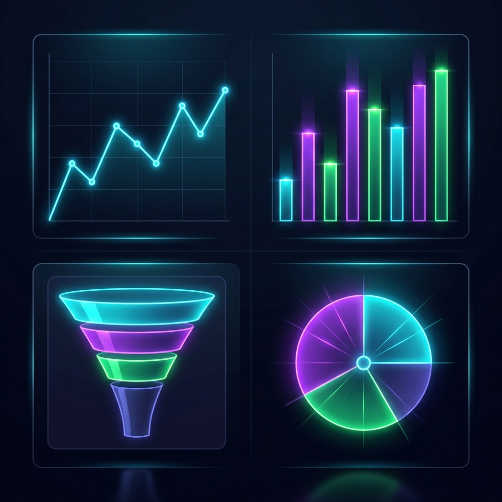

Превращаю данные в продуктовые решения.
SQL · Python · Amplitude · Growth Metrics

Я продуктовый аналитик с системным подходом к данным. Умею не просто строить дашборды - умею читать за цифрами поведение пользователей и находить точки роста продукта.
Выпускник Compass College по направлению продуктовой аналитики. В учёбе и проектах работал с реальными датасетами: проводил когортный анализ, строил воронки конверсии, считал юнит-экономику и помогал командам принимать data-driven решения.
Формулирую гипотезы, проверяю через данные, делаю выводы
Перевожу метрики в бизнес-решения, понятные продакт-менеджерам
Быстро погружаюсь в продукт и начинаю приносить пользу
Инструменты, которые использую для сбора, обработки и визуализации данных
Пишу сложные запросы с JOIN, подзапросами, оконными функциями. Работаю с PostgreSQL, ClickHouse.
Анализ данных с pandas, визуализация через matplotlib/seaborn, автоматизация рутинных задач.
Строю воронки, когортный анализ, Retention-чарты, пользовательские пути и дашборды для стейкхолдеров.
Набор инструментов для полного цикла аналитики - от сбора данных до презентации результатов.
Знаю, что считать, зачем считать и как использовать в продуктовых решениях
Средняя выручка на одного пользователя. Ключевая метрика для оценки монетизации всей базы. Помогает понять общий уровень генерации выручки.
ARPU = Revenue / Total Users
Выручка на платящего пользователя. Показывает, сколько реально приносит каждый платящий - важно для оценки ценовой политики.
ARPPU = Revenue / Paying Users
Суммарная выручка от пользователя за весь период его жизни в продукте. Основа для оценки рентабельности привлечения.
LTV = ARPU × Avg Lifetime
Стоимость привлечения одного клиента. Определяет эффективность маркетинга и рекламы. LTV/CAC > 3 - здоровый бизнес.
CAC = Marketing Spend / New Customers
Количество уникальных пользователей, совершивших целевое действие за сутки. Показатель ежедневной активности продукта.
DAU = Unique users / day
Уникальные пользователи за месяц. Важен для оценки размера аудитории и долгосрочной вовлечённости.
MAU = Unique users / month
Соотношение дневной и месячной аудитории. Показывает, насколько «прилипчив» продукт. 20%+ - хорошо, 50%+ - отлично.
Stickiness = DAU / MAU × 100%
Конверсия на первом шаге воронки (регистрация, установка, первое действие). Критически важна для оценки онбординга.
C1 = Step1 Completions / Starts × 100%
Процент пользователей, проходящих каждый шаг воронки. Позволяет найти «дыры» и точки наибольшего оттока.
Conv = Users at step N / Step 1 × 100%
Доля пользователей, которые перестали использовать продукт за период. Обратная сторона Retention.
Churn = Lost Users / Start Users × 100%
Процент пользователей, вернувшихся в продукт через N дней (D1, D7, D30). Ключевая метрика качества продукта.
Retention D7 = Returned D7 / Cohort × 100%
Сравнение групп пользователей, привлечённых в разное время. Позволяет понять, как изменения в продукте влияют на поведение.
Cohort = Group of users by acquisition date
Индекс лояльности пользователей. Показывает, насколько они готовы рекомендовать продукт. Хорошо коррелирует с Retention.
NPS = % Promoters − % Detractors
Реальные задачи, решённые в рамках обучения и самостоятельных проектов
Провёл когортный анализ удержания пользователей мобильного приложения. Выявил, что когорты февраля показывают D7-Retention на 8% ниже среднего. Нашёл причину - изменение онбординга. Предложил гипотезу для A/B теста.
Построил воронку от регистрации до первой покупки. Определил шаг с наибольшим оттоком (73% дропа на экране ввода платёжных данных). Предложил UX-упрощение.
Посчитал юнит-экономику учебного SaaS-продукта: CAC по каналам, LTV когорт, точку окупаемости. Сделал вывод о нерентабельности двух каналов привлечения.
Разработал дизайн A/B теста для проверки нового онбординга: рассчитал необходимый размер выборки, определил метрики успеха (C1, D7 Retention), описал критерии остановки.
Если вы ищете внимательного аналитика, который умеет превращать данные в решения - давайте пообщаемся.